Dinosaur
Ornithomimus sp.
• Cretaceous
• Belly River Group
• Red Deer River, Alberta, Canada
Size: 3.5 cm
PRICE: $480 $450
Here is a very rare footclaw of the theropod dinosaur Ornithomimus sp., from the Cretaceous of Canada. All-natural without restoration/reconstruction.
Any dinosaur claw and especially theropod claws are rare finds, far rarer and more valuable than teeth. This claw is complete and in great condition, with well-preserved tip and proximal articulation surface. The majority of claws are partials or heavily-restored, with either the tip or proximal ends missing. Last but not least, it is from Alberta, Canada. Canada has very strict laws on collecting and exporting dinosaur fossils, and so you will not find any from there besides from old collections such as this one.
Addendum: Please note that I cannot sell this to Canadian buyers, as current Canada law strictly prohibits selling/buying of Alberta dinosaur material.
 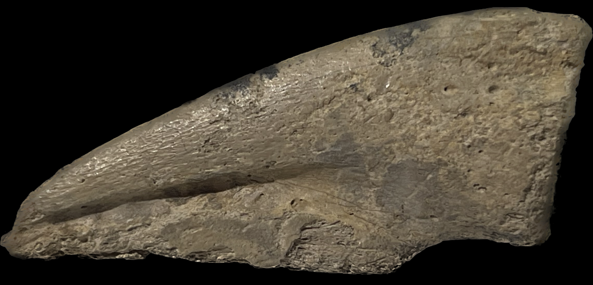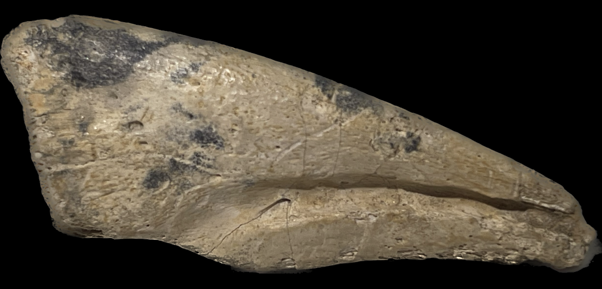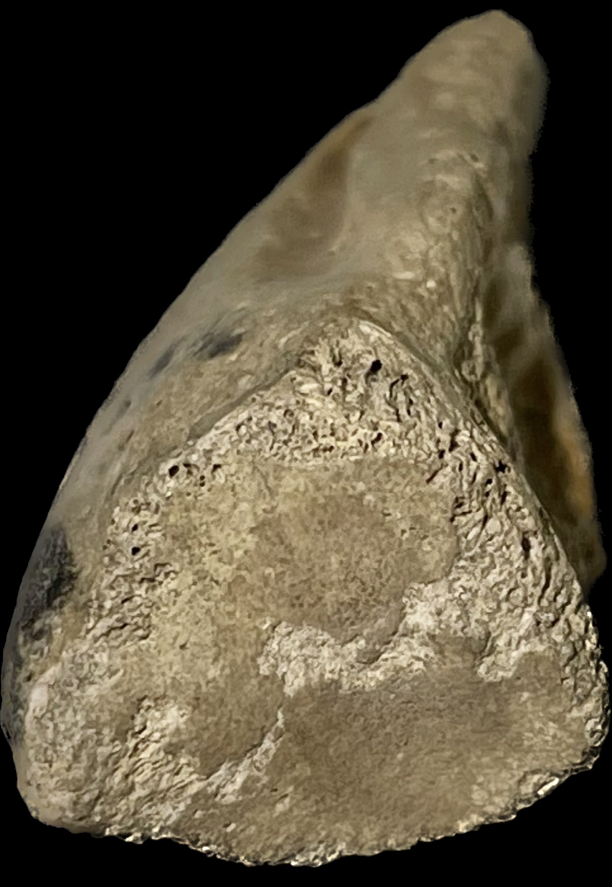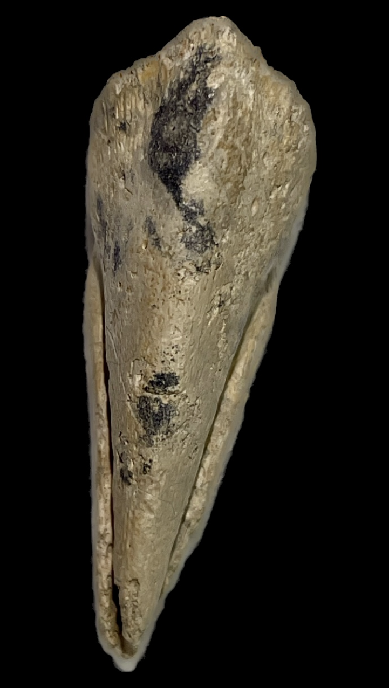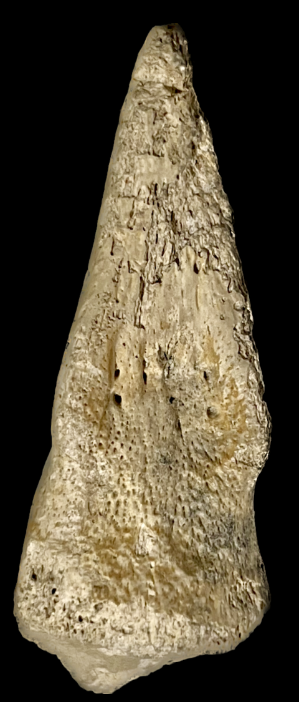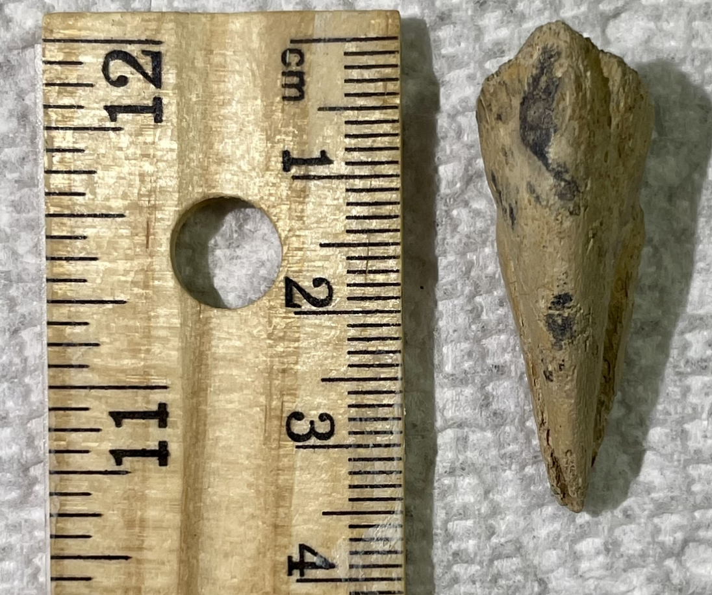
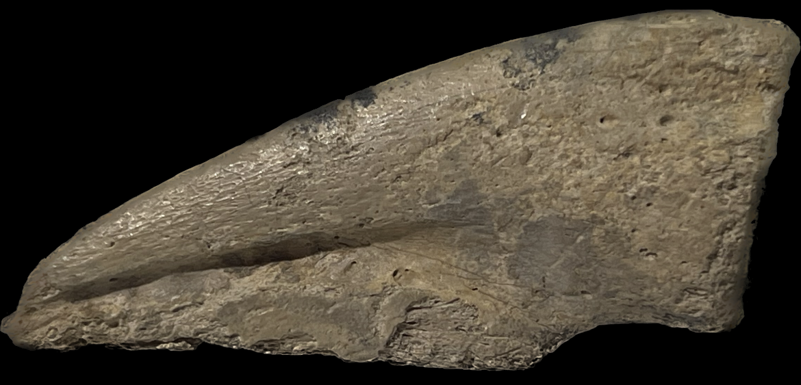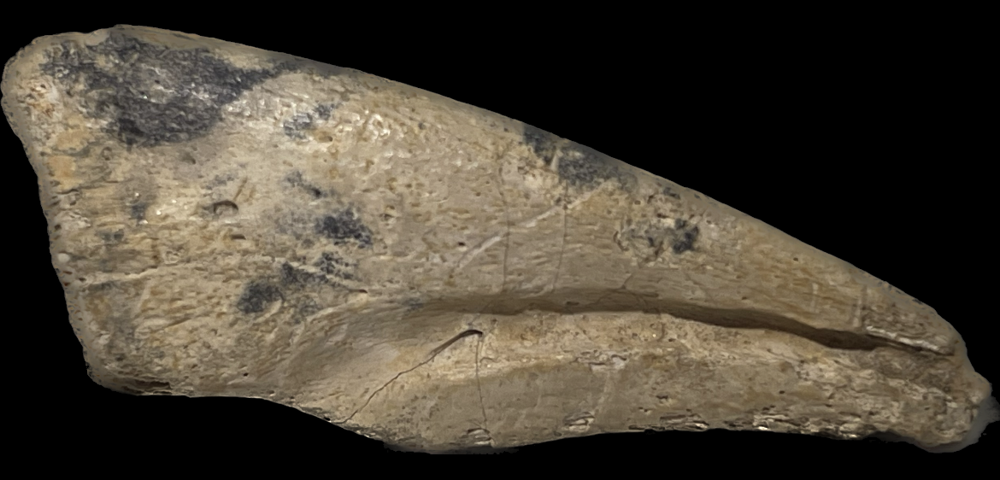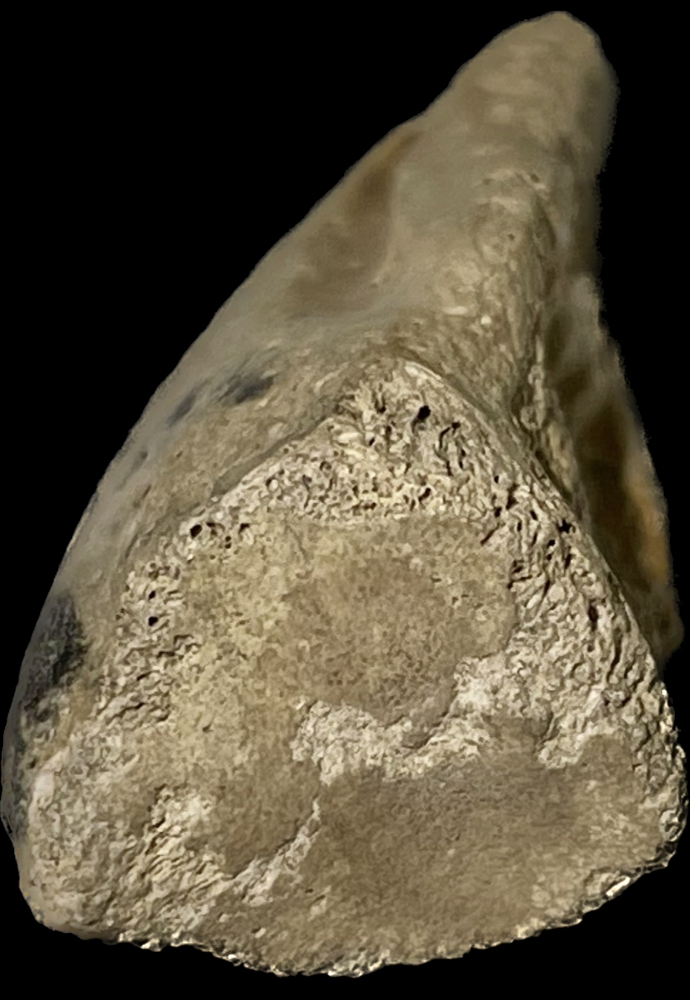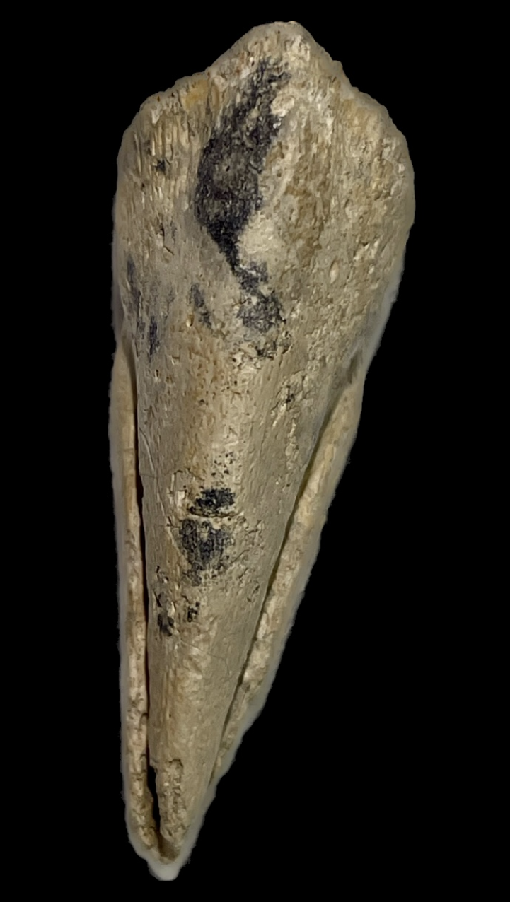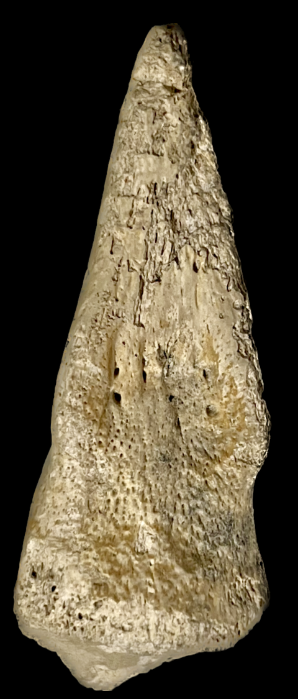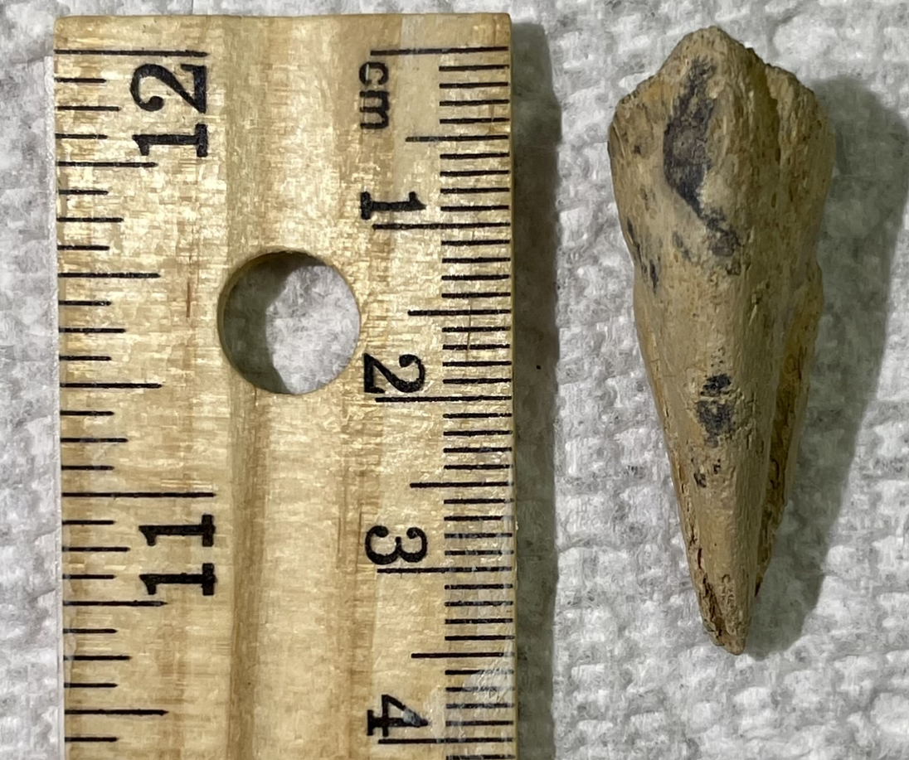